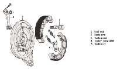

As drum brake shoes wear, the lever or pedal must move further before the brake works. Adjusting takes up that extra movement at the wing nut on the brake rod or cable at the wheel, or at the cable adjuster near the lever. Check this every week on a working bike and after any wheel or chain adjustment.
Safety
- Do this with the engine off and the bike on its stand.
- Too tight is as dangerous as too loose: a dragging brake heats up, wears fast and can lock the wheel.
- If you reach the end of the adjuster thread, the shoes or cam are worn. Do not ride until the brake has been serviced.
You need
- The free play value for your bike from the owner's manual. No generic value is given here.
Steps
- Measure free play: move the lever or pedal by hand until you just feel the shoes touch. The distance moved at the tip or pedal pad is the free play.
- Compare with your manual. Too much travel: tighten the adjuster. Too little or none: loosen it.
- Rear rod brake: turn the wing nut at the brake arm. Clockwise usually shortens the rod and reduces free play. Make sure the nut's notch sits on the arm's pin after adjusting.
- Front cable brake: make large changes at the adjuster near the wheel, then use the adjuster at the lever for fine setting so the rider keeps some adjustment there. Tighten locknuts.
- Look at the angle between the brake arm and the cable or rod with the brake on. If the arm goes past a right angle to the rod or cable, the brake loses power and the cam may go over centre: the shoes are worn. Go to Service a drum brake.
- Check the wear indicator pointer is still inside its mark.
- Lift the wheel and spin it. It must turn freely. A very light brush is acceptable.
- Rear brake: check the brake light comes on just as the brake starts to work. Adjusting the rod changes when the switch operates. See Test and adjust the brake light switches.
- After adjusting the chain, always recheck the rear brake: moving the wheel changes the rod length.
Check your work
- Free play is within your manual's range.
- The wheel spins freely when the brake is off.
- The brake light works.
- The brake grips firmly at walking speed before the lever or pedal is near its end.
If it did not fix the problem
- Adjuster at its end, or brake still weak: Drum brake is weak.
- Lever or pedal stiff or slow to return: Lubricate control cables and Service footpegs and foot pedals.